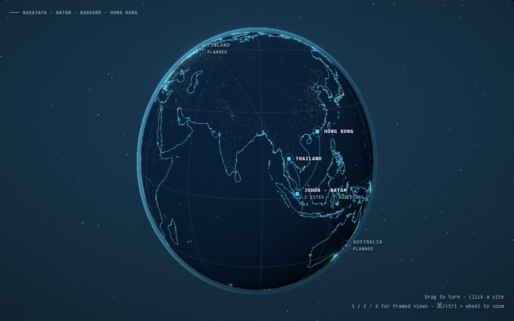

Three routes, side by side
The reference — motionsites.ai’s 404 Planet — has no 3D in it at all. That page holds zero canvas elements and no WebGL; every moving thing on it is a muted autoplay video, and the hero asset is a Higgsfield mp4 on the same CloudFront bucket ours came back on. So this is not one planet against another. It is offline rendering against real-time rendering, and offline wins on looks because it has no 16 ms budget to meet. What it cannot do is know anything.
Video hero, live map below
The generated planet as a 21:9 band that carries the arrival, then the interactive globe underneath carrying the substance.
- Looks like the reference on arrival
- Still answers where are the sites
- Two heavy things on one page
Video only
The reference route taken literally: full-bleed generated planet, type over it, nothing else. One 2.2 MB file.
- The best looking of the three
- Cannot mark a site or be clicked
- Australia opening means a new video

Real-time, pushed harder
No video. Darker body, luminous coastlines, a limb that brightens only on the lit side, and an outer bloom standing in for a post pass.
- Six sites at their real coordinates
- Johor and Batam split at 59 km
- Will not out-render an offline frame
| A · video + map | B · video only | C · real-time | |
|---|---|---|---|
| Planet is | generated video | generated video | WebGL, drawn live |
| Frame budget | none, then 16 ms | none | 16 ms |
| Weight | 2.2 MB + three.js | 2.2 MB | three.js + 33 KB coastline |
| Shows the six sites | yes, below | no | yes |
| Clickable | yes, below | no | yes |
| Adding a country | one line of data | regenerate the video | one line of data |
| Geography | model’s, then real | whatever the model drew | Natural Earth 110m |
| Loop seam | ping-ponged to 0.5 | ping-ponged to 0.5 | n/a |
On the loop: the generated clip rotates continuously, so its last frame and its first sit a third of a planet apart — on plain loop it jumps every ten seconds, and the measured difference across that seam (11.4) was worse than between two unrelated frames (9.2). Appending the clip reversed takes it to 0.5. The price is that half the loop turns the wrong way, which at this speed nobody sees.